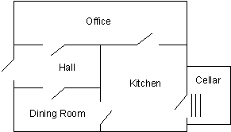

1. 事实
事实（
facts）是prolog中最简单的谓词（predicate）。它和关系数据库中的记录十分相似。在下一章中我们会把事实作为数据库来搜索。谓词：
Prolog语言的基本组成元素，可以是一段程序、一个数据类型或者是一种关系。它由谓词名和参数组成。两个名称相同而参数的数目不同的谓词是不同的谓词。
事实的语法结构如下：
pred(arg1, arg2, ... argN).
其中pred为谓词的名称。arg1，...为参数，共有N个。‘.’是所有的Prolog子句的结束符。没有参数的谓词形式如下：
pred.
参数可以是以下四种之一：
- 整数（
integer): 绝对值小于某一个数的正数或负数。 - 原子（
atom）: 由小写字母开头的字符串。 - 变量（
variable）: 由大写字母或下划线（_）开头。 - 结构（
structure）: 在以后的章节介绍。
不同的Prolog还增加了一些其他的数据类型，例如浮点数和字符串等。
Prolog字符集包括：大写字母，A-Z；小写字母，a-z；数字，0-9;+-/\^,.~:.?#$等。
原子通常是字母和数字组成，开头的字符必须是小写字母。例如：
hello
twoWordsTogether
x14
为了方便阅读，可以使用下划线把单词分开。例如：
a_long_atom_name`
z_23`
下面的是不合法的原子，
no-embedded-hyphens
123nodigitsatbeginning
Nocapsfirst
下划线不能放在最前面
使用单引号扩起来的字符集都是合法的原子。例如：
'this-hyphen-is-ok'
'UpperCase'
'embedded blanks'
下面的由符号组成的也是合法的原子：
>,++
变量和原子相似，但是开头字符是大写字母或是下划线。例如：
X
Input_List
下划线开头的都是变量
Z56
有了这些基本的知识，我们就可以开始编写事实了。事实通常用来储存程序所需的数据。例如，某次商业买卖中的顾客数据。customer/3。（/3表示customer有三个参数）
customer('John Jones', boston, good_credit).
customer('Sally Smith', chicago, good_credit).
必须使用单引号把顾客名引起来，因为它们是由大写字母开头的，并且中间有空格。
再看一个例子，视窗系统使用事实储存不同的窗口信息。在这个例子中参数有窗口名称和窗口的位置坐标。
window(main, 2, 2, 20, 72).
window(errors, 15, 40, 20, 78).
某个医疗专家系统可能有如下的疾病数据库。
disease(plague, infectious). {疾病（瘟疫，有传染性）}
Prolog的解释器提供了动态储存事实和规则的方法，并且也提供了访问它们的方法。数据库的更新是通过运行‘consult’或‘reconsult’命令。我们也可以直接在解释器中输入谓词，但是这些谓词不会被储存到硬盘上。
1.1. 寻找Nani
下面我们正式开始“寻找Nani”游戏的编写。我们从定义基本的事实开始，这些事实是本游戏的基本的数据库。它们包括：
- 房间和它们的联系
- 物体和它们的位置
- 物体的属性
- 玩家在游戏开始时的位置
寻找Nani游戏的的房间格局如下:

首先我们使用room/1谓词定义房间，一共有五条子句，它们都是事实。
room(kitchen).
room(office).
room(hall).
room('dining room').
room(cellar).
我们使用具有两个参数的谓词来定义物体的位置。第一个参数代表物体的名称，第二个参数表示物体的位置。开始时，我们加入如下的物体。
location(desk, office).
location(apple, kitchen).
location(flashlight, desk).
location('washing machine', cellar).
location(nani, 'washing machine').
location(broccoli, kitchen).
location(crackers, kitchen).
location(computer, office).
注意：我们定义的那些符号，例如：
kitchen、desk等对于我们是有意义的，可是它们对于Prolog是没有任何意义的，完全可以使用任何符号来表示房间的名称。
谓词location/2的意思是“第一个参数所代表的物体位于第二个参数所代表的物体中”。Prolog能够区别location(sink, kitchen)和location(kitchen, sink)。因此，参数的顺序是我们定义事实时需要考虑的一个重要问题。
下面我们来表达房间的联系。使用door/2来表示两个房间有门相连，这里遇到了一个小小的困难：
door(office, hall).
我们想要表达的意思是，office和hall之间有一个门。可是由于Prolog能够区分door(office, hall)和door(hall, office)，所以如果我们想要表达一种双向的联系，就必须把每种联系都定义一遍。
door(office, hall).
door(hall, office).
参数的顺序对定义物体的位置有帮助，可是在定义房间的联系时却带来了麻烦。我们不得不把每个房门都定义两次！
在这一章里，只定义单向的门，以后会很好地解决此问题的。
door(office, hall).
door(kitchen, office).
door(hall, 'dining room').
door(kitchen, cellar).
door('dining room', kitchen).
下面定义某些物体的属性，
edible(apple).
edible(crackers).
tastes_yucky(broccoli).
最后，定义手电筒（由于是晚上，玩家必须想找到手电筒，并打开它才能到那些关了灯的房间）的状态和玩家的初始位置。
turned_off(flashlight).
here(kitchen).
好了，到此你应该学会了如何使用Prolog的事实来表达数据了。